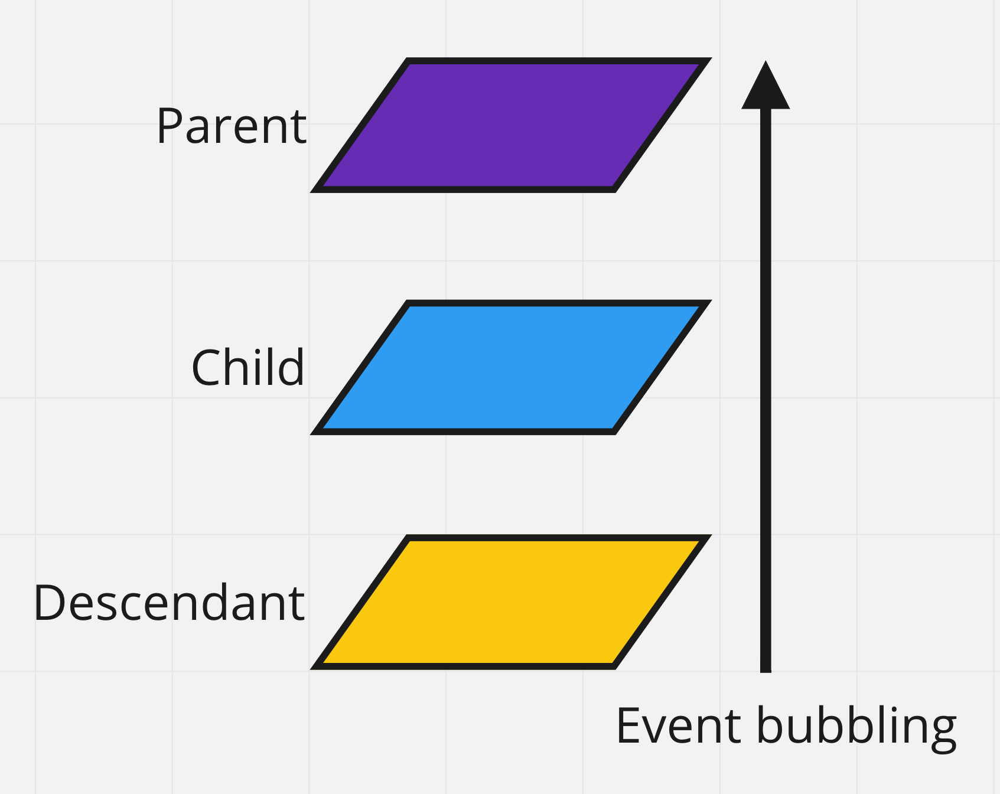

Спливання подій
Спливання подій
Під час настання події, обробники спочатку спрацьовують на найбільш вкладеному елементі, потім - на його батьківському елементі, потім вище і так далі, вгору по ланцюжку вкладеності. Цей процес називається спливання (event bubbling), тому що події «спливають» від внутрішнього елемента вгору через усіх предків до window, подібно до спливання бульбашки повітря у воді.
Розглянемо приклад, так буде зрозуміліше. Є три вкладених тега <div> з обробниками кліка на кожному з них.
<div id="parent">
Parent
<div id="child">
Child
<div id="descendant">Descendant</div>
</div>
</div>
Спливання гарантує, що клік по #descendant викличе обробник кліка, якщо він є, спочатку на самому #descendant, потім на елементі #child, далі на елементі #parent і так далі вгору по ланцюжку предків до window. Тому, якщо в прикладі клікнути на #descendant, то послідовно виведуться alert для descendant → child → parent.
See the Pen lesson-13-event-bubbling by goit-academy (@goit-academy) on CodePen.
ЦІКАВО: Спливають майже всі події, наприклад, події focus і blur не спливають, тому існують їх спливаючі аналоги - focusin і focusout.
Властивість event.target
Незалежно від того, де ми спіймали подію під час її спливання, завжди можна дізнатися, де саме вона відбулася. Найглибший елемент, який викликає подію, називається цільовим або вихідним, і доступний як event.target.
- event.target - це посилання на вихідний елемент, на якому відбулася подія, в процесі спливання вона - незмінна.
- event.currentTarget - це посилання на поточний елемент, до якого дійшло спливання, на ньому зараз виконується обробник події.
Якщо слухач події зареєстрований на найвищому елементі, то він «спіймає» усі кліки всередині, тому що події будуть спливати до цього елемента. Відкрийте консоль в прикладі і поклікайте, event.target - це завжди вихідний (і найглибший) елемент, на якому був клік, а event.currentTarget не змінюється.
See the Pen lesson-13-event-target by goit-academy (@goit-academy) on CodePen.
Припинення спливання
Зазвичай, подія буде спливати вгору до елемента window, викликаючи усі обробники на своєму шляху. Але будь-який проміжний обробник може вирішити, що подія повністю оброблена і зупинити спливання, викликавши метод stopPropagation().
See the Pen lesson-13-stop-propagation by goit-academy (@goit-academy) on CodePen.
Якщо елемент має декілька обробників на одну подію, то, навіть у разі припинення спливання, усі вони будуть виконані. Тобто метод stopPropagation() тільки перешкоджає просуванню події далі. Якщо необхідно повністю зупинити обробку події, використовується метод stopImmediatePropagation(). Він не тільки запобігає спливанню, але й зупиняє обробку подій на поточному елементі.
ЦІКАВО: Не припиняйте спливання без необхідності. Припинення спливання створює свої підводні камені, які потім доводиться обходити. Наприклад, аналітика використовує спливання, щоб відстежувати події на сторінці.